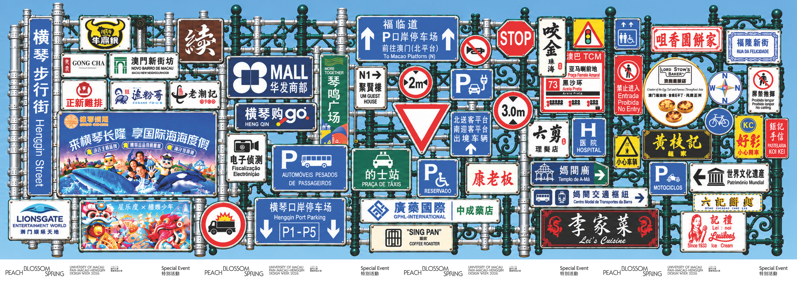

Exploring Difference · Where does Macao begin for you?

匿名記錄你的選擇位置，僅用於本次作業研究。
COLLECTIVE PERCEPTION / 選擇分佈
把每一次判斷放回同一幅畫面，看看感知中的邊界如何聚集、分散。
正在讀取已提交的選擇…
每格對應畫面寬度的5%，表示圖上位置。每個瀏覽器保留最近一次確認；記錄數不等同於覈實人數。
PERCEPTUAL BOUNDARIES / POSTERS
01 / 05依檔名順序排列 · 左右滑動瀏覽